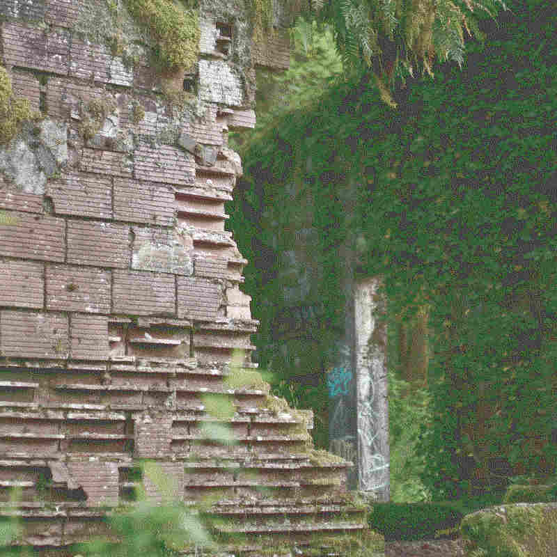

--- enter
[cont] [once] Is that a bookmark? I haven't used those in a long long time
[once] Those were really useful on the day before tabs.
--- click
[cont] I used to come here to touch the leaves, it has a really nice texture.
The leaves here are so slippery that some people even call them gliders...